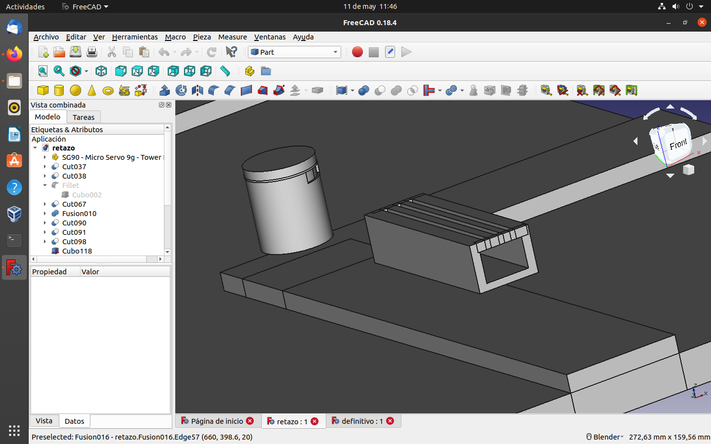

Taking into account everything we learnt in the 3D workshop, we managed to build/design a crane and a car in 3D.

The first thing we built was the base of the crane and the base where it will go, although we didn't print the base with the road because it didn't fit in the 3D machine. This piece is one of the most important parts of the crane because it is the one that makes the whole crane rotate. It is made of a cylinder and four squares fused together. Then we made another piece a bit bigger than the one with the holes in it and fused it all together.

These pieces are the base that makes the whole crane rotate, the thickest piece is the one that goes underneath, then the one on the right is made up of a coupling for the motor and an opening for the previous piece. The smaller one goes inside to make the axle work and the flatter one is incorporated in the crane itself.

We've made a few additions such as a bench and a litter bin.
We simply built a pretty good 3D car in the workshop so we have taken the same design and added some new features such as a backpack on the battery box bracket and enlarged it a bit more to put the sensors in.
